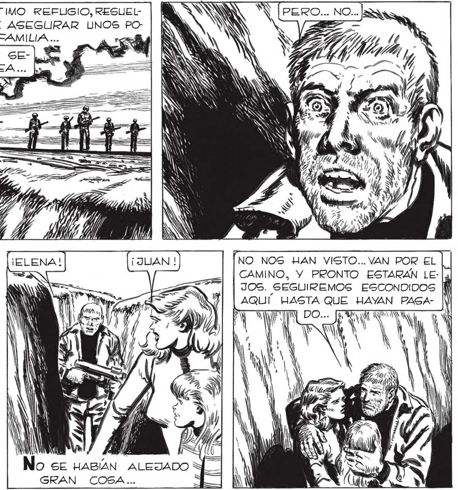

¡HAGANME CASO! ¡NO ES MOMENTO PARA DiGAHORA ENTIENDO POR QUE FAVALLI Y LOS OTROS lg ME ORDENARON IR AL CAMION... TRATARON DE SAL- | VARME SACRIFICANDOSE ELLOS... PERO NO SIR- Y | VIO" DE_ NADA ... ¡7727 IZ / 2" SS] > Z 7 , IZ, SN Y a Ñ X NN A IN AN ANA Ñ WN NO DEBÍ GRITARLES ASÍ... PERO NO ES .. LINA FIERA ACORRALADA EN SU ÚLTIMO REFLIGIO, RESUELN MOMENTO ESTE PARA DESPEDIDAS.. iTTA A HACERSE MATAR CON TAL DE ASEGURAR UNOS PO] COS MINUTOS MAS DE VIDA A SU FAMILIA... » O Y GAMA AN Li A 0 SN W , HOT > E sl > e, A » ! / : Pa Y , PAN y ZZ SS | WEY" e /) y ál ¡NO VIENEN HACIA AQUI"¡DOBLAN Y SlGUEN POR EL CAMINO! ¡ESTO QUIERE DECIR QUE NO ME HAN VISTO! QUE PODEMOS SEGUIR ESCONDIDOCS... yO = 7 | ll f CORRERÉ A REUNIRME CON ELENA Y CON MARTITA... SUERTE QUE ME DI CUENTA A TIEMPO... Sl HUBIERA EMPEZADO A LOS TIROS HABRIA DELATADO NUESTRA PRESENCIA ... ; 0) 4 NO NOS HAN VISTO... VAN POR EL CAMINO, Y PRONTO ESTARÁN LEJ3OS. SEGUIREMOS ESCONDIDOS AQUÍ. HASTA QUE HAYAN PAGA- JA US pp WI AN LY CON) W Je ( O SE HABÍAN ALEJADO J_| GRAN COSA... == 349
